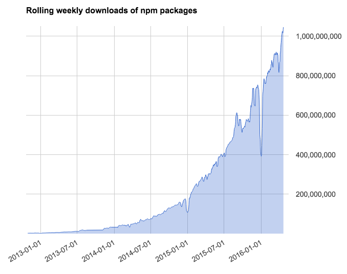
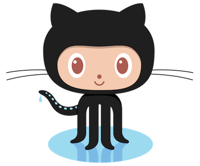

JavaScript and Browser Automation
Selenium Conf 2016
See this talk online
Umar Hansa / @umaar
Want to see the GoPro version with heart rate data?
DevTools Tips
A developer tip, in the form of a gif, in your inbox each week.
Subscribe: umaar.com/dev-tips
Or search: 'chrome dev tips'
>120 tips posted so far! 🎊
The goal of this talk
- Understanding how to automate browsers in JS
- Evaluate some browser automation tooling
- Learn some debugging tricks
Why JavaScript?
The NPM ecosystem
Over 1 billion downloads per week
Projects most ⭐starred⭐ on github are mainly JS
JavaScript has elegant syntax
Fat arrow
const odds = evens.map(v => v + 1)
Destructuring
[a, , b] = [1,2,3];
// a = 1
// b = 3
async/await
Before async/await (callback version)
browser.getTitle(function(title) {
console.log(title)
})
Before async/await (promise version)
browser.getTitle().then(function(title) {
console.log(title)
})
With async/await
title = await browser.getTitle()
Template strings
const selector = `.header`
findElement(`body ${selector}`)
Recipes
Counting Wiki links
# In your terminal
npm i selenium-webdriver
const webdriver = require('selenium-webdriver');
// no need to memorise this 😧
const browser = new webdriver
.Builder()
.usingServer()
.withCapabilities({'browserName': 'chrome' })
.build();
browser.get('http://en.wikipedia.org/wiki/Wiki');
const links = await browser.findElements(
webdriver.By.css('[href^="/wiki/"]')
)
concole.log(links.length)
node Wiki.js
# > 396
Getting to Philosophy on Wikipedia
Getting to Philosophy on Wikipedia
Clicking on the first lowercase link in the main text of a Wikipedia article, and then repeating the process for subsequent articles, usually eventually gets one to the Philosophy article.
const url = 'wikipedia.org/wiki/Special:Random';
browser.get(url).then(clickFirstLink)
function clickFirstLink() {
const link = '#mw-content-text > p a[title]';
browser.click(link);
}
if (linkText === 'Philosophy') {
// We made it!
} else {
link.click().then(clickFirstLink);
}
A Google Search
The 'hello world' of browser automation
Selenium WebDriver
Official JS bindings
browser.get('https://www.google.com');
browser
.findElement(webdriver.By.name('q'))
.sendKeys('selenium conf 2016');
browser
.findElement(webdriver.By.name('btnG'))
.click();
const selector = webdriver.By.css(
'[href="http://seleniumconf.co.uk/"]'
);
const link = webdriver
.until
.elementLocated(selector);
browser.wait(link, 2000).click();
console.log('Title: ', await browser.getTitle());
//Instead of:
browser.getTitle()
.then(title => console.log(title));
$ node --harmony-async-await search.js
# Title: SeleniumConf UK 2016 - Home page
Error examples
Missing URL to browser.get()
DalekJS
WebDriver.io
The Google search demo...
var client = webdriverio.remote(options);
client
.init()
.url('https://google.com')
.setValue('*[name="q"]','selenium conf 2016')
.click('*[name="btnG"]')
.click('[href="http://seleniumconf.co.uk/"]')
.getTitle().then(console.log)
.end()
Testium
it('performs a google search', function() {
const linkSelector = '[href="http://seleniumconf.co.uk/"]';
browser.navigateTo('https://google.com');
browser.type('[name="q"]', 'selenium conf 2016')
browser.waitForElementExist(linkSelector);
browser.click(linkSelector);
console.log('Title is: ', browser.getPageTitle());
});
Nightwatch
Testcafe

import { ClientFunction } from 'testcafe';
const getTitle = ClientFunction(() => document.title);
fixture `Google Search for Selenium Conf 2016`
.page `https://www.google.com`;
const text = 'selenium conf 2016';
const link = '[href="http://seleniumconf.co.uk/"]';
await t.typeText('[name="q"]', 'selenium conf 2016')
await t.click('[name="btnK"]');
await t.click('[href="http://seleniumconf.co.uk/"]');
console.log('Title: ', await getTitle());
Custom Error
Scraping speaker names from the conference website
Tips and tricks
Selenium - webdriver.js
Source code as documentation
github.com/SeleniumHQ/selenium/blob/master/javascript/node/selenium-webdriver/lib/webdriver.js
Never Sleep
🙅 .sleep() / .pause()🙅
Replace existing sleeps with waitFor
Introduce errors for learning
- Throw JS errors
- Go to invalid pages
- Manipulate hidden parts of the DOM
Use a MITM proxy to mock network requests
Proxy Use cases
- Scraping: block JS + CSS from loading
- Testing: serve static data for expensive server calls
- Learning: manipulate the response, learn more HTTP
Code review everything
Encourage best practices
Your tests are still code
- Lint
- Code Review
- Pair
- Documentation
Extra considerations
- Caching
- User agents
- Screen dimensions
- Restarting the browser with a fresh profile
Speed
Split your tests up based on priority
Run p1 tests before a deploy
Run p3 tests overnight
Async
Take time to learn async with callbacks, promises and await
async/await is still async code
Further Reading
Browser Automation Libraries
Live edit WebDriverJS code
node --inspect google-search-example.js
Thank you
umaar.com/dev-tipsTwitter: @umaar
umar.hansa@gmail.com for feedback or ideas